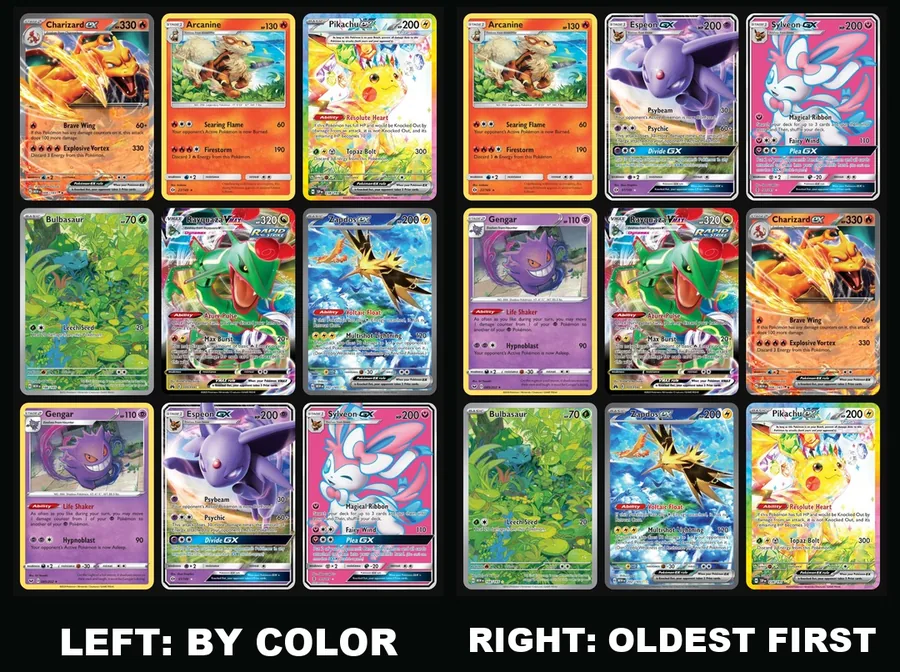

Rainbow binder
How to make a rainbow Pokémon binder
The color order
Read the page like a book: left to right, top to bottom. Each color below is where most regular cards of that type land.
| Color | Regular cards of this type |
|---|---|
| Red | Fire |
| Orange and brown | Fighting |
| Gold | Dragon, a good bridge between orange and yellow |
| Yellow | Lightning |
| Green | Grass |
| Blue | Water |
| Purple | Psychic |
| Pink | Fairy, printed in the XY and Sun & Moon eras. Newer Fairy Pokémon are Psychic cards. |
| Black | Darkness |
| Gray | Metal |
| White | Colorless |
Trainer and Energy cards rarely fit a fade. Most collectors keep them out of a rainbow binder.
Same nine cards, two ways

On the left, Charizard and Arcanine open in red and orange and Pikachu carries the yellow. Bulbasaur and Rayquaza bring the greens. Zapdos is a Lightning card, but its art is mostly sky, so it sits with the blues. Gengar and Espeon hold the purples and Sylveon closes in pink. On the right the same cards jump from color to color. Neither page is wrong; the point is to see both before you sleeve anything.
Tips that make the fade work
- Judge from arm's length. The color that fills most of the card wins, not the small type symbol.
- Use bridge cards at the joins. An orange card between red and yellow, a teal one between green and blue, a violet one between purple and pink.
- One color per page works too. A red page, an orange page and so on reads as a rainbow when you flip through. That is seven pages for the seven main colors.
- Give full arts their own rainbow. Their bright art next to plain frames can look patchy, so many collectors run a second rainbow just for them.
- Leave a free pocket at each join. A new card then slots into its color without moving the rest of the binder.
Try the order before you sleeve
Moving real cards around wears sleeves and corners. Plan the fade first:
- Open the free page builder. No account needed.
- Type a card name and tap the printing you want. Pockets fill in the order you tap, so start with your reds and end with your pinks.
- Tap See page. Tap a card to take it out, then add another, until the fade runs smoothly.
- Keep the page with a free account, then sleeve the real cards in the same order.
Questions
What order do the colors go in?
Red, orange, yellow, green, blue, purple and pink, then black, gray and white at the end.
Should I sort by type or by color?
Sort by type first, since most regular cards take their background color from their type. Then move full art and illustration rare cards by eye, because their color comes from the artwork.
Where do cards with two colors go?
Place them by the color that covers most of the card, or use them as the bridge between two colors.
Is the page builder free?
Yes. Planning a page needs no account. Keeping it makes a free account, which never asks for payment details.
More guides: Binder theme ideas · Pokédex binder · Binder page calculator · Binder page planner · Pokémon card scanner · Favorite Pokémon binder · Organize your binder · Eevee family page
Pokémon is a trademark of its owners. Beltstra is an independent app and is not affiliated with or endorsed by them.